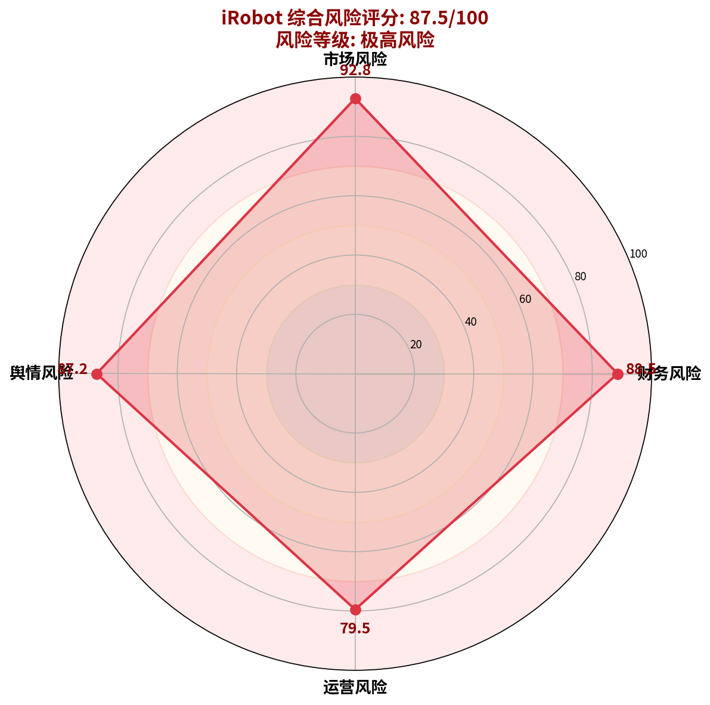
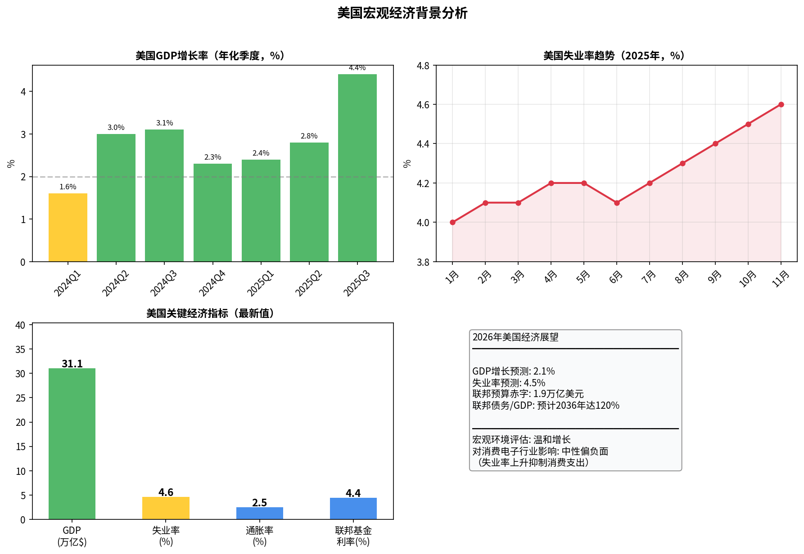
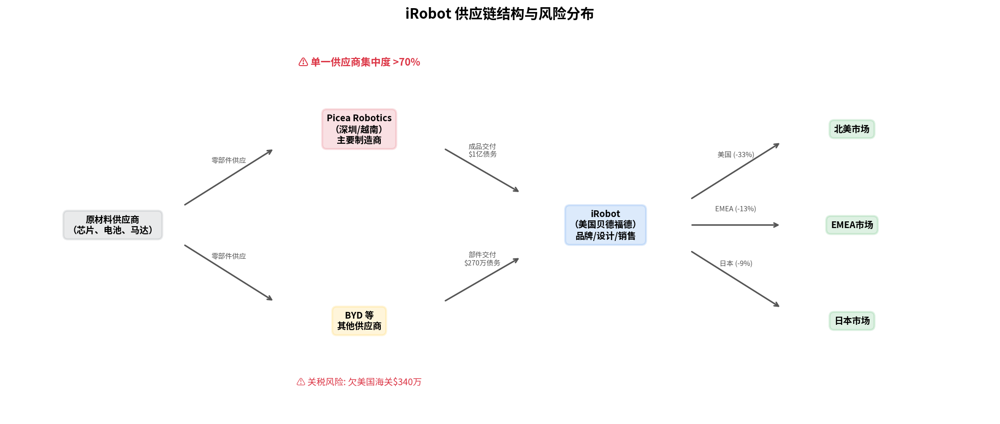
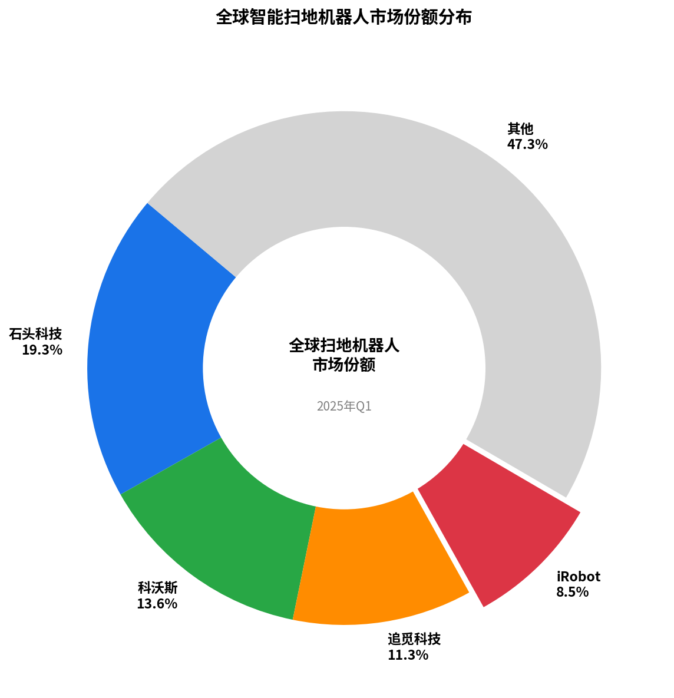
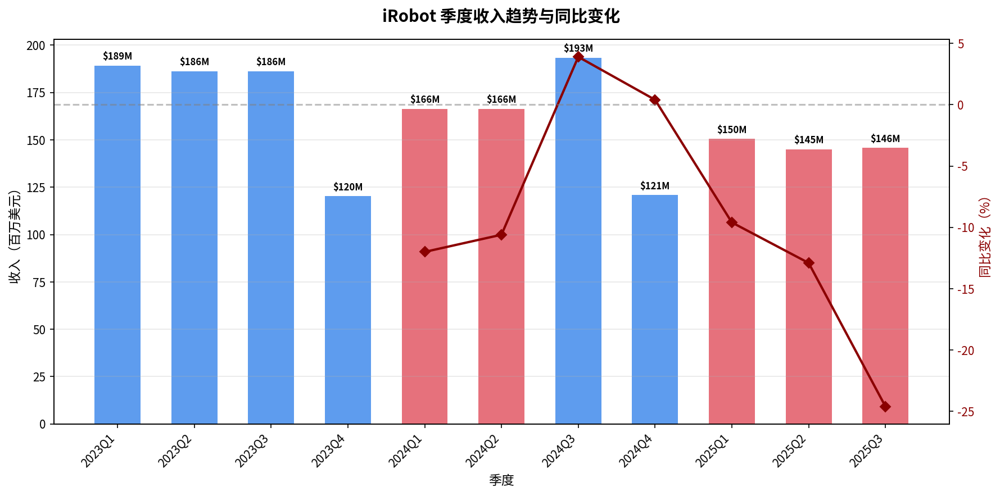
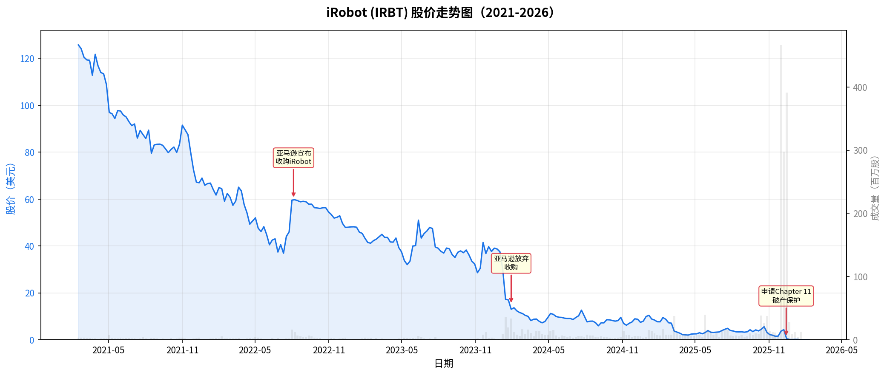
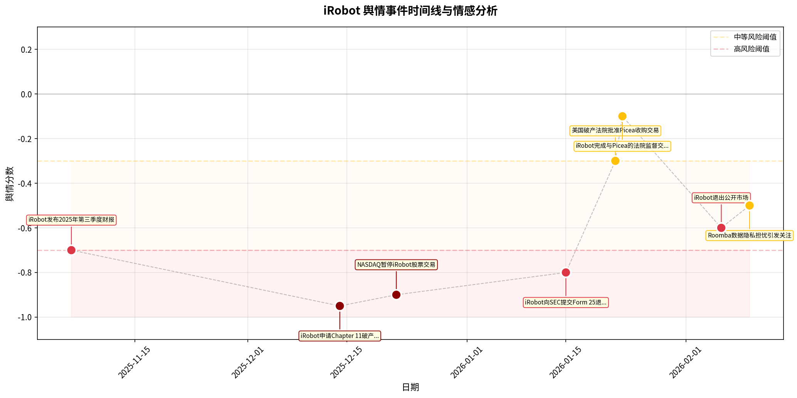
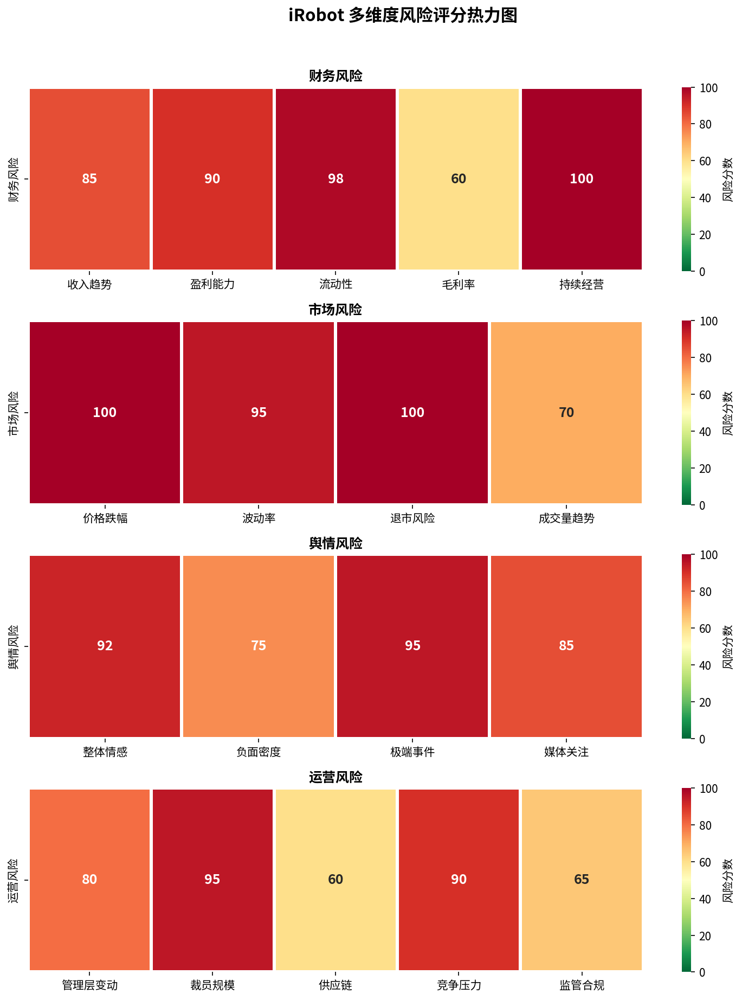
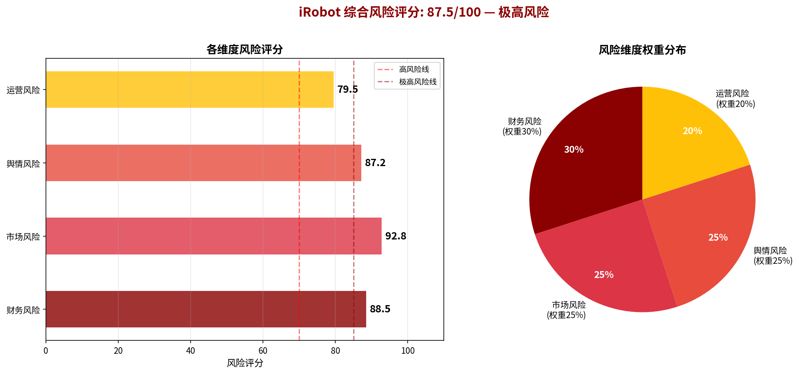

本报告对消费机器人领域的先驱 iRobot Corporation (NASDAQ: IRBT) 进行了全面的深度风险诊断。在原有财务、市场、舆情和运营风险分析的基础上，本报告新增了供应链风险和竞争格局对比两大分析维度，旨在提供更立体、更深刻的风险洞察。
评估结果显示，iRobot 的五维度综合风险评分为 86.3 (满分100)，风险等级为"极高风险"。该评级反映了公司在走向破产重组过程中，除自身财务和运营问题外，其脆弱的供应链结构和在激烈市场竞争中的全面溃败是加速其衰落的关键催化剂。
iRobot的五维度综合风险评分为 86.3，属于"极高风险"等级。
| 风险维度 | 评分 | 等级 | 权重 |
|---|---|---|---|
| 财务风险 | 88.5 | 极高风险 | 25% |
| 市场风险 | 92.8 | 极高风险 | 20% |
| 舆情风险 | 87.2 | 极高风险 | 20% |
| 运营风险 | 79.5 | 高风险 | 15% |
| 供应链风险 | 81.2 | 高风险 | 20% |
| 综合风险 | 86.3 | 极高风险 | 100% |
在iRobot陷入危机的2025-2026年期间，美国宏观经济环境呈现出"温和增长但消费承压"的特点。虽然GDP保持正增长，但失业率逐步攀升，通胀压力依然存在，对消费电子行业构成中性偏负面的影响。
供应链风险评分：81.2 (高风险)
iRobot采用的"轻资产"外包模式最终被证明是其致命弱点。公司将超过70%的生产能力集中于单一制造商——中国的Picea Robotics，形成了极高的供应链集中度风险。
| 风险子项 | 评分 | 等级 | 说明 |
|---|---|---|---|
| 单一供应商依赖 | 95 | 极高 | 超过70%生产外包给Picea |
| 地缘政治风险 | 85 | 极高 | 核心制造基地位于中国 |
| 关税敞口风险 | 80 | 高 | 已欠美国海关340万美元 |
| 库存管理风险 | 78 | 高 | 2024年2660万美元库存减记 |
| 物流中断风险 | 72 | 高 | 2025Q3运输中断致收入不及预期 |
| 质量控制风险 | 60 | 中等 | 外包模式下质量控制依赖制造商 |
在激烈的市场竞争中，iRobot已被中国竞争对手全面超越。2025年第一季度，其全球市场份额仅为8.5%。
| 指标 | 石头科技 | 科沃斯 | 追觅科技 | iRobot | 行业平均 |
|---|---|---|---|---|---|
| 2024年收入 | $1,637M | $2,267M | $1,096M | $682M | - |
| 收入增长率 | +38.0% | +6.7% | +55.0% | -19.8% | +19.9% |
| 毛利率 | 51.5% | 48.2% | 45.0% | 20.9% | 41.4% |
| 净利率 | 18.2% | 5.8% | 8.0% | -22.0% | 2.5% |
| 市场份额 | 19.3% | 13.6% | 11.3% | 8.5% | - |
| 库存周转天数 | 45天 | 58天 | 40天 | 95天 | 60天 |
| 供应链模式 | 自研+外包 | 自有+外包 | 自有为主 | 完全外包 | - |
| 员工人数 | ~4,500 | ~8,000 | ~5,000 | ~450 | - |
财务风险评分：88.5 (极高风险)
iRobot的财务状况在破产前已全面崩溃。2024年全年收入仅为6.82亿美元，同比下降19.8%。2025年第三季度收入进一步同比下降24.6%。至2025年第三季度末，现金及现金等价物仅剩2480万美元。
市场风险评分：92.8 (极高风险)
公司股价经历了灾难性的下跌，从超过100美元的历史高点到不足0.1美元的场外交易价格，原有股东的投资价值几乎完全蒸发。
舆情风险评分：87.2 (极高风险)
在过去的一年中，关于iRobot的公开信息几乎完全被负面新闻主导。从"亚马逊收购失败"到"申请破产保护"，再到"被中国公司收购"，每一个重大事件都对品牌声誉造成了沉重打击。
运营风险评分：79.5 (高风险)
iRobot作为扫地机器人的开创者，未能有效应对来自中国竞争对手的挑战。公司过度依赖亚马逊的收购，而在交易失败后缺乏有效的B计划。为削减成本，公司在2024-2025年进行了多轮大规模裁员，员工总数从约1400人锐减至约450人。
 综合风险展望：极度悲观
iRobot作为独立实体的生命已经结束。并入Picea Robotics旗下后，虽然Roomba品牌得以延续，但它面临的挑战依然是结构性的和根本性的。
最终结论：iRobot的案例为所有全球化运营的科技消费品公司提供了一个深刻的、多维度的警示。它雄辩地证明了，在当今的商业环境中，单一的品牌或技术优势已不足以构筑坚固的护城河。一个缺乏韧性、过度集中的供应链，以及在面对新兴竞争力量时的战略迟钝，足以摧毁一个曾经的行业王者。